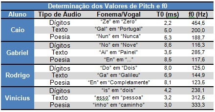
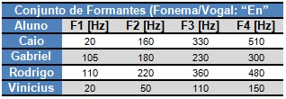

Audio descrição 👇
Relatório
Resultados e Conclusão

Tabela 1: Determinação dos valores de Pitch e f0
• Fonema “Gal” obtido pelo Pedro e o fonema “Ga” obtido pelo Rodrigo:
Neste caso, foi possível identificar de forma razoável a frequência fundamental (f0) para a vogal “a”, ou seja, no caso do Pedro o valor encontrado foi de 200 Hz e no caso do Rodrigo foi de 145 Hz. Da teoria [1] temos que f0 para a vogal “a” possui Média de 116 Hz e Desvio-Padrão de 14,12 Hz (para homens e/ou vozes mais grave) e média de 192 Hz e Desvio-Padrão de 16,44 Hz (para mulheres e/ou vozes mais agudas).
• Fonema “No” obtido pelo Gabriel e o fonema “Do” obtido pelo Rodrigo:
Neste caso, foi possível identificar de forma bem adequada a frequência fundamental (f0) para a vogal “o”, ou seja, no caso do Gabriel o valor encontrado foi de 116 Hz e no caso do Rodrigo foi de 125 Hz. Da teoria [1] temos que f0 para a vogal “o” possui Média de 126 Hz e Desvio-Padrão de 19,37 Hz (para homens e/ou vozes mais grave).
Para outros fonemas/vogais a análise revelou que os resultados não foram tão precisos e requerem uma análise mais criteriosa, haja vista a grande variação entre os valores obtidos pelos membros do grupo, por exemplo:
• Fonema “Zel” obtido pelo Pedro, fonema “En” obtido pelo Gabriel, fonema “En” obtido pelo Rodrigo e fonema “Esso” obtido pelo Vinícius: Neste caso, as frequências f0 obtidas não nos permitiu identificar direta e adequada a vogal “e”. Os valores obtidos pelos membros do grupo foram, respectivamente, 454 Hz, 117 Hz, 123 Hz e 312 Hz, os quais não seguem um padrão bem definido. Da teoria [1] temos que f0 para a vogal “e” possui Média de 123 Hz e Desvio-Padrão de 17,8 Hz (para homens e/ou vozes mais grave) e média de 199 e Desvio-Padrão de 15,65 Hz (para mulheres e/ou vozes mais agudas). Neste caso, os valores obtidos pelo Gabriel e pelo Rodrigo concordam entre si, o que pode ser justificado, em partes, pelo fato destes terem utilizado o mesmo fonema “En” para a análise, obtendo assim resultados semelhantes. Ressalta-se ainda que, conforme valores expostos na análise, os resultados obtidos pelo Gabriel e pelo Rodrigo estão de acordo com a referência teórica.
[1] Comparação de medidas de frequência fundamental e frequências dos formantes em duas tarefas de fala. Revista CEFAC, 2019. Disponível em: Scielo. Acesso em: 15 de novembro de 2021.

Tabela 2: Conjunto de formatantes
Da teoria [1] temos que as quatro primeiras formantes (f1, f2, f3 e f4) para a vogal “e” são:
• f1: Média: 384 Hz / Desvio-Padrão: 31,83;
• f2: Média: 2203 Hz / Desvio-Padrão: 175,07;
• f3: Sem Ref.
• f4: Sem Ref.
Os valores obtidos no experimento por cada um dos membros do grupo, de certa forma concordam entre si, exceto pelos valores obtidos pelo Vinícius. Entretanto, ambos os valores divergem daquilo que é esperado com base no referencial teórico. Precisamos reavaliar o método aplicado na obtenção dos resultados práticos, haja vista a grande discrepância do resultado prático em relação ao teórico.